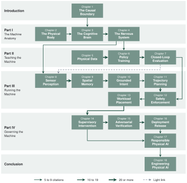
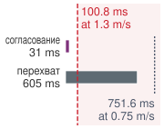

Предисловие
Для кого эта книга
Эта книга предназначена для студентов старших курсов и начинающих аспирантов в области информатики, робототехники, электротехники и машинного обучения, а также для практикующих инженеров, которые создают, развертывают или сертифицируют физические системы искусственного интеллекта. Она написана для инженера, который видел, как воплощенная политика преуспела в моделировании или демонстрации по сценарию, и теперь должен создать машину, которая день за днем перемещает массы среди людей. Эта машина не должна столкнуться с коллегой, повредить полезную нагрузку, сжечь обмотку двигателя или убежать из-за тайм-аута сети.
Читатель должен понимать основы программирования на Python и интуитивное машинное обучение, а также знакомиться с вводными понятиями ньютоновской физики, линейной алгебры и основ теории вероятности. Книга не предполагает наличие предыдущих книг этой серии. Он разрабатывает концепции физического ИИ там, где они впервые используются, и выводит временные характеристики, управление и взаимосвязь с размещением оборудования, необходимые для анализа воплощенных рабочих нагрузок, не требуя специального образования в теории нелинейного управления или микроархитектуры интегральных схем (ASIC) для конкретных приложений.
Зачем нужен физический ИИ Учебник
Разумный инженер мог бы взглянуть на нынешнюю волну моделей фундаментов роботов и задать скептический вопрос. Является ли физический ИИ настоящей системной дисциплиной с прочными принципами, или это просто классическая робототехника с прикрученным трансформатором или сквозная нейронная сеть, работающая на бортовом компьютере?
Скептицизм справедлив. Большая часть того, что написано о воплощенном ИИ, посвящена впечатляющим демонстрациям однозадачности, таким как ловкое ручное складывание белья или гуманоид, идущий по лаборатории. Демонстрация, однако, не является развертыванием. В полевых условиях неудача редко возникает из-за грубой выразительности модели. Что дает сбой, так это система вокруг нее: когда наблюдение поступает с опозданием на 50 миллисекунд, предложение действий требует большего крутящего момента, чем могут обеспечить приводы шарнирного привода, или немоделированная задержка превращает команду торможения в удар.
Традиционные системы машинного обучения основаны на бестелесном прогнозировании. Модель оценивает статические входные данные в разомкнутом цикле и возвращает рекомендательные метки, рейтинги или токены, не воздействуя непосредственно на мир. Поскольку человек или нижестоящая служба все равно должны решить, что делать с этими выходными данными, ошибочный прогноз может быть отброшен или пересчитан до того, как он причинит вред, а системная инженерия сосредотачивается на балансировании затрат на обучение с задержкой обслуживания, памятью и пропускной способностью. Системы агентного машинного обучения переходят от одиночных прогнозов к последовательным действиям: модель формулирует многоэтапные планы, проверяет обратную связь и вызывает программные инструменты в замкнутом цикле. Однако пока этот цикл остается внутри цифровой среды, виртуальное время можно приостановить, выполнение можно изолировать, а неудачные транзакции можно откатить.
Системы физического ИИ привносят агентность в непрерывную физику. Когда автономная модель управляет исполнительными механизмами, вычисления пересекают причинную границу массы, импульса, трения и тепла. В непрерывной физике не существует виртуальных песочниц: время не может остановиться, пока рассматривается модель фундамента, а ньютоновская работа не может быть повернута вспять после удара. Более крупная модель не может сократить тормозной путь, охладить электрическую обмотку или восстановить зазор, затраченный во время вычислений. Поэтому физический ИИ требует архитектурной дисциплины. Изученные модели предполагают, в то время как независимый путь разрешения, со своим собственным временем и собственным резервным рабочим режимом, решает, что может проникнуть в физический мир.
Эта книга учит, как проектировать, измерять и управлять этой машиной. Ее центральный вопрос заключается в том, что нужно воплощенной задаче на основе изученной модели для создания полезного физического сервиса, подкрепленного необходимыми доказательствами. Читатели должны иметь возможность переводить физические ограничения в вычислительные бюджеты, разрабатывать сенсомоторные политики, которые замыкают цикл в рамках сроков в реальном времени, обеспечивать гарантию выполнения во время независимо от ученого, предлагающего, и обосновывать выпуск обоснованием безопасности, которое связывает утверждения с эмпирическими данными.
Причинная граница и четыре закона
Единицей проектирования в этой книге является причинная граница, интерфейс, где допустимая цифровая команда становится током в обмотке двигателя, крутящим моментом на валу и физической силой, передаваемой в мир. Точность имеющегося набора данных не является мерилом физической системы искусственного интеллекта. Мерой является то, достигают ли действия с обратной связью цели задачи в проверенных физических пределах, что подтверждается доказательствами, независимыми от самоотчета изученной модели, и с какой ценой в задержке, энергии, тепловом запасе и вычислениях.
Четыре основных закона определяют архитектуру книги. Каждый закон сочетает физическое или статистическое ограничение с системным механизмом, необходимым для его ограничения:
- Первый закон: необратимость. Программное обеспечение не может отменить физические последствия. Каждая проверка, допускающая команду, должна завершиться до того, как машина пройдет оставшееся расстояние, поэтому физические ограничения становятся строгими бюджетами по времени, расстоянию, крутящему моменту, нагреву и напряжению.
- Второй закон: эндогенные данные. Действия физической машины выбирают ее следующие наблюдения. Состояния, которые посещает развернутая политика, обусловлены ее собственными предыдущими действиями, поэтому компетентность - это утверждение, ограниченное операционным диапазоном, который фактически проверяется оценкой с обратной связью.
- Третий закон: предложение не является разрешением. Обученная модель может предлагать движение; только независимый путь разрешения может это допустить. Путь разрешений оценивает состояние, возраст которого ограничен, выполняется в течение детерминированного срока, установленного физикой объекта управления, и поддерживает возможный резервный режим, который не зависит от обученного предлагающего.
- Четвертый закон: разрешение должно быть заработано. Разрешение на эксплуатацию предоставляется в соответствии с условиями эксплуатации на основании записанных доказательств, и его срок действия истекает, когда эти доказательства исчезают.
Первый из них – физический закон. Остальные три — это принципы проектирования, воплощенные аналоги ковариатного сдвига, обеспечение работоспособности и обоснование безопасности. Эта книга возводит их в ранг основополагающих законов, поскольку производственная машина, нарушающая их, подвергается предсказуемым физическим рискам.
Два отношения определяют количественную оценку этих обязательств на протяжении всей книги. Задержка — это расстояние определяет тормозной бюджет: если машина, движущаяся со скоростью
Архитектура машины разделяет пять ролей: Мозг (обученные модели, предлагающие цели и движения), Нервная система (детерминированная коммуникация и независимый путь разрешения), Корпус (приводы приводов, трансмиссии, обмотки и системы питания), Граница (запись регистров и захват данных датчиков) и Мир (непрерывная физическая динамика, препятствия и люди). Мобильный складской манипулятор, который перемещается по проходу, совместно используемому с работниками, открывает дверь с пружинной защелкой и перемещает хрупкий полезный груз, служит эталонной машиной в каждой главе. Пример гуманоида в конце каждой части проверяет, выживут ли рассуждения в теле, сочетающем в себе баланс, крутящий момент суставов и рассеивание тепла.
О чем эта книга
Книга строит понимание в порядке физической зависимости: анатомия, обучение, бег, управление. В каждой части добавляются обязанности, к оценке которых читатель готовится в предыдущем материале, а справочные приложения содержат вспомогательные математические, управляющие и аппаратные выводы:
- Введение: Причинная граница (Глава 1) оценивает задержку на причинной границе, определяет пятиуровневую машинную архитектуру и устанавливает четыре управляющих закона.
- Часть I: Анатомия машины превращает первый закон в физические бюджеты. Глава 2 измеряет то, что тело может сделать до повреждения, Глава 3 характеризует обученного предлагающего и то, как быстро устаревают его доказательства, а Глава 4 определяет, как часто должен проходить путь разрешения и как долго предложение может управлять исполнительными механизмами.
- Часть II: Обучение машины применяет второй закон к сенсомоторному обучению. Глава 5 записывает демонстрации с условиями их эксплуатации, Глава 6 анализирует режимы обучения и зависимости, которые они скрывают, а Глава 7 ограничивает компетентность политики посредством оценки с обратной связью с конечным числом проб.
- Часть III: Запуск машины применяет третий закон во время выполнения. Он следует за измерениями датированных датчиков через восприятие (Глава 8), пространственную память и оценку состояния (Глава 9), привязка намерения (Глава 10) и планирование траектории (Глава 11) до принудительного исполнения во время выполнения (Глава 12), а также проверяет, поддерживает ли оборудование реального времени этот путь вовремя. (Глава 13).
- Часть IV: Управление машиной применяет четвёртый закон к оперативной власти. Глава 14 управляет передачей полномочий между машиной и оператором. Глава 15 вводит физические и вычислительные ошибки, чтобы доказать сдерживание. Глава 16 создает обоснование безопасности, оправдывающее выпуск при указанных условиях. Глава 17 называет тех, кто отвечает за каждое решение, лежащее в основе допустимого действия, какие человеческие роли человек действительно может выполнять, и какие люди несут риск машины и фигурируют в ее записях.
- Вывод: Инженерный физический ИИ (Глава 18) синтезирует полную методологию, переносит рассуждения на незнакомую машину и устанавливает открытые границы исследований.
Справочные приложения содержат базовую информацию по основам машинного обучения (Основы машинного обучения), управлению и динамике (Управление и динамика), системам и оборудованию (Системы и аппаратное обеспечение), устранению сенсомоторных неполадок (физический ИИ. Матрица устранения производственных неполадок), а также единый глоссарий. Каждое приложение организовано в виде справочника, чтобы читатели могли ознакомиться с конкретным выводом, не теряя нити основного текста.
Как читать эту книгу
Книга написана для того, чтобы ее читали по порядку. В каждой главе используются только идеи, представленные ранее или определенные там, где они появляются, и каждая владеет своими концепциями. Каждая глава начинается с описания физической проблемы, которую она решает, раскрывает механизм как ответ и завершается подведением итогов и переходом к следующей главе. Классические системные механизмы (периоды действия сторожевых разрешений, фильтры безопасности, блокировки, отказоустойчивые резервы и планирование в реальном времени) представляют собой конкретные решения физических опасностей, а не абстрактную теорию.
Читатели с особым вниманием могут адаптировать свою глубину после введения. Четыре направления соответствуют основным инженерным должностям, которые сотрудничают при развертывании физического ИИ:
- Учебная программа по основным системам: следуйте полной последовательности от Глава 1 до Глава 18, чтобы интегрировать физические ограничения, обучение, проектирование среды выполнения и эксплуатационные данные.
- Системы машинного обучения и изученные среды выполнения: сосредоточьтесь на общей основе, сенсомоторной тренировке и оценке (от Глава 5 до Глава 7), восприятии и планировании (от Глава 8 до Глава 13) и выпуске. (Глава 16).
- Встроенные системы и микросхемы: Сосредоточьтесь на общей основе, размещении среды выполнения (Глава 13), синхронизации связи (Глава 4) и проверке ошибок (Глава 15).
- Робототехника, контроль и обеспечение: Сосредоточьтесь на общей основе, оценке состояния и планировании (Глава 9–Глава 11), обеспечении исполнения во время выполнения (Глава 12), человеческом вмешательстве (Глава 14) и ответственности за окружающих. машина (Глава 17).
Доказательства перетекают от физической анатомии через обучение и выполнение во время выполнения к оперативному выпуску, и зависимости глав в шести разделах книги следуют этому прогрессу (рисунок 1). Каждая стрелка на карте представляет собой конкретную запись или физическую границу, передаваемую от одного этапа разработки к другому.

Поля для чтения и указатели навигации
На полях рядом с текстом размещены небольшие наглядные пособия, где легче всего увидеть количественные отношения, разрыв масштаба или порог. Каждый визуальный образ соответствует одной из пяти повторяющихся форм:
- Лестники охватывают порядки величин (например, пропускную способность приема датчиков или скорость выполнения цикла).
- Пороговые колени отмечают точку, в которой физическое соотношение меняет режим (например, отраженная инерция ротора, доминирующая в зубчатых передачах, или пиковые силы контактной жесткости).
- Конверты бюджета устанавливают конкурирующие требования в зависимости от крайнего срока (например, этапы диффузионного шумоподавления в зависимости от периодов контроля или задержки при поглощении оператором).
- Полоски последовательности иллюстрируют многофазную синхронизацию (например, выполнение фрагмента с отступающим горизонтом или подтверждение неисправности).
- Причинно-следственные цепочки отслеживают распространение неисправности от ошибки датчика до физических последствий.



Наряду с этими визуальными примечаниями, ненумерованные маргинальные навигационные указатели прослеживают архитектурные связи между главами. Три символа определяют, смотрит ли указатель назад на основу, вперед на последующего потребителя или на контрастный дизайн:
↩︎Указатель назад: Направляет читателя обратно к предыдущей главе, где была установлена физическая привязка, аппаратный контракт или тактовая частота.↪Указатель вперед: Направляет читателя к следующей главе или к приложению, где идея развивается, измеряется или реализуется.⇄Контраст: Отмечает место, где две главы или машинные классы по-разному решают одну и ту же проблему.
Указатель только ориентирует. Если аргумент зависит от другой главы, ссылка остается в тексте.
Чем не является эта книга
Это не руководство по ROS 2 или промежуточному программному обеспечению. Промежуточное программное обеспечение и платформы обмена сообщениями меняются, тогда как физические требования, которым они должны удовлетворять (ограниченная задержка, детерминированная сериализация и изоляция ошибок), остаются неизменными. Поэтому в книге протоколы реального времени и очереди сообщений представлены только как механизмы соблюдения установленных физических сроков. Это также не руководство по механическому САПР или трактат по проектированию двигателей, поскольку в нем характеризуются приводы, трансмиссии и температурные ограничения через бюджеты на программное обеспечение, которые они налагают, а не через их механическое производство. По той же причине моделирование предстает здесь не как таблица лидеров, где оценки разомкнутого цикла используются для развертывания, а как инструмент для генерации гипотез и обучающих данных. Его утверждения все равно должны быть проверены на физической машине. Программные агенты, которые действуют исключительно с помощью цифровых API без физических исполнительных механизмов, остаются за пределами нашей компетенции.
Примечание о долговечности
Форм-факторы роботов, архитектура нейронных сетей и микросхемы приводов двигателей будут развиваться, причем некоторые из них будут развиваться еще до того, как эта книга выйдет в печать. Таким образом, в тексте подчеркиваются принципы, которые выдерживают эти переходы: причинная граница как единица разработки, четыре управляющих закона, разделение между учеными предлагающими и детерминистическими путями разрешения, а также дисциплина, обосновывающая оперативный авторитет эмпирическими данными. Текущие платформы и модели представлены повсюду, чтобы конкретизировать концепции, но принципы не зависят от какого-либо конкретного поставщика, модели или аппаратной платформы. Там, где вопрос активно не решается в этой области, например, как лучше всего проверить общую политику в редких крайних случаях, книга представляет проблему как открытую инженерную задачу, а не как устоявшуюся доктрину.
Учебник с открытым исходным кодом
Эта книга имеет открытый исходный код. Полный текст, рисунки и система сборки доступны по адресу mlsysbook.ai/git, вклад каждого читателя приветствуется. Эта открытость является преднамеренной. физический ИИ опирается на робототехнику, управление, машинное обучение и встроенные системы, знания которых редко хранятся в одном месте. Учебник, который их объединяет, должен быть доступен всем, кто работает за пределами этих границ, независимо от географического положения или институциональной принадлежности.
Читатели помогают больше всего, исправляя ошибку, предлагая более четкое объяснение, добавляя проработанный пример или сообщая о случаях, когда претензия не распространяется на реальное оборудование. Проблемы и запросы на включение обеспечивают механизм такого сотрудничества.
Живой учебник
Печатный учебник готов в день его сдачи в печать. Этого поля нет, как и мое понимание его. Как педагог, я хочу, чтобы читатели получили самое лучшее объяснение, которое я могу дать, поэтому я продолжаю пересматривать онлайн-издание по мере того, как меняются системы и поскольку преподавание показывает мне более ясный способ объяснить идею. Принципы, изложенные в этой книге, выбраны на века. Примеры, цифры и объяснения вокруг них — вот что меняется. Каждый выпуск имеет номер версии, а в примечаниях к выпуску записано, что изменилось, поэтому курс или цитата могут указывать на фиксированную версию.
Предварительные требования
Проработанные примеры и выводы основаны на пяти основных областях. Читателям должно быть удобно:
- программирование на Python и работа с числовыми массивами;
- основные концепции машинного обучения, включая контролируемое обучение, функции потерь и логический вывод;
- вводная механика Ньютона (положение, скорость, ускорение, сила, крутящий момент, инерция);
- линейная алгебра (векторы, матрицы, преобразования координат); и
- вероятность бакалавриата и базовая статистика.
Более глубокое знание классической теории управления, операционных систем реального времени или кинематики робототехники полезно, но не обязательно; В книге развиваются необходимые концепции контроля, оценки и работы в реальном времени там, где они необходимы в первую очередь. Каждый специализированный инструмент вводится с первых принципов в тот момент, когда от него зависит принятие конкретного системного решения.